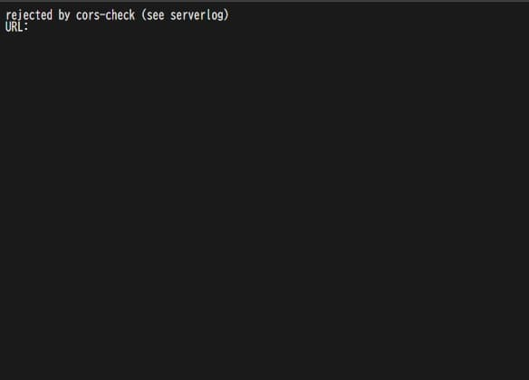

rejected by cors-check (see serverlog)
URL:
こんな内容で
とりあえずgoogle先生に聞いたら
Nginx Request Rejected By Cors Check
ってのがヒット
まんまの内容で「即解決きちゃぁ」って思い、書いてある通りに設定してみたら、なぜかエラーは治らず
dockerのエラー内容の確認を怠っていたので見てみると
got header "x-forwarded-for" from untrusted source "192.168.5.2" claiming the true client ip is "192.168.5.2"
could not determine the client's IP-address because the global-option --rproxy has not been configured
WARN: http403: rejected by cors-check (see serverlog), '/'
割と要点のみに絞りましたががずらっと
chatgpt先輩に聞けばproxyの設定が上手く行ってないのと
クライアントipが正しく認識できてないよとのこと
とりあえずcompose.ymlを見てほしい
services:
copyparty:
image: copyparty/ac:latest
container_name: copyparty
user: "1000:1000"
restart: unless-stopped
ports:
- 3923:3923
volumes:
- ./cfg:/cfg
- /srv/local:/srv/local:rw
- /srv/media:/srv/media:ro
- /srv/images:/srv/images:ro
environment:
LD_PRELOAD: /usr/lib/libmimalloc-secure.so.NOPE
PYTHONUNBUFFERED: 1
command: [
"python3", "-m", "copyparty",
"--origins=copyparty.39dbh.duckdns.org",
"--rproxy", "-1",
"--xff-src=lan",
"--xff-hdr=x-forwarded-for"
]
stop_grace_period: 15s
healthcheck:
test: ["CMD-SHELL", "wget --spider -q 127.0.0.1:3923/?reset=/._"]
interval: 1m
timeout: 2s
retries: 5
start_period: 15s
恐ろしく変わってしまった
次にcopyparty.conf
[global]
hist: /cfg/hists/
e2ts, e2dsa
acao: https://copyparty.39dbh.duckdns.org
rproxy: 443
[accounts]
user: password
[/localUP]
/srv/local
accs:
rwmd: user
[/images]
/srv/images
accs:
r: user
[/media]
/srv/media
accs:
r: user
今回のMVPは
acao: https://copyparty.39dbh.duckdns.org
rproxy: 443
である
Block Common ExploitsとWebsockets SupportをONに
# copyparty に正しいヘッダを渡す（これがないと Origin が合わない）
proxy_set_header Host $host;
proxy_set_header X-Forwarded-Proto $scheme;
proxy_set_header X-Forwarded-Host $host;
# ログイン時の POST で CORS エラー回避
proxy_hide_header Access-Control-Allow-Origin;
を追加
休憩を挟んでも相当な時間と労力がかかりました。
12時ちょっと前ぐらいから初めて休憩挟みつつ今が24時超えた ...